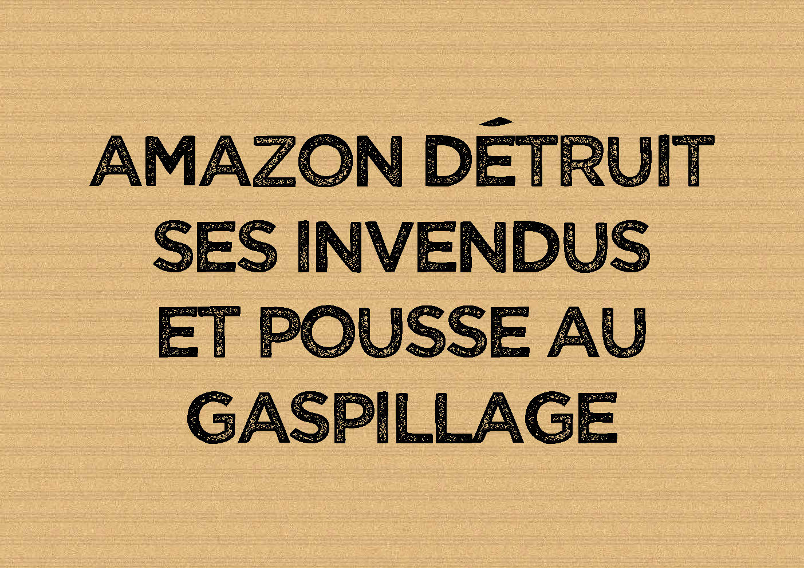

Amazon détruit l’environnement
(Retrouvez les 30 bonnes raisons de stopper Amazon)
Avec son ambition de sortir de terre 30 à 35 entrepôts en France d’ici 3 ans, Amazon est un désastre environnemental (voir ici) :
- Artificialisation des sols
- Augmentation de la circulation des poids lourds et des utilitaires
- Retour gratuit des produits
- Développement du transport aérien (voir ici)
- Pollution de l’air et des sols
Surproduction, surconsommation et gaspillage
Amazon se sert de sa taille et de ses ressources pour offrir les produits à des prix non-réalisables pour la concurrence et parfois même en dessous du prix coûtant.
- 15 milliards de produits vendus dans le monde (2018)
- Augmentation massive de la consommation de produits
- Augmentation massive des transports internationaux, ainsi que des transports d’approvisionnement des entrepôts et de livraison de marchandises, provoquant nuisances et pollutions
Amazon pratique un gaspillage considérable : + de 3 millions de produits neufs ont été détruits par Amazon en France en 2018. Il s’agit de produits qui ne se vendent pas assez rapidement, appelés « produits invendus ».
En réalité, Amazon veut faire payer l’entreposage par les vendeurs, mais le problème est que des produits restent trop longtemps et ne sont pas assez rapidement vendus. Si les vendeurs ne veulent plus payer, les produits sont détruits ; et il leur revient moins cher de les détruire que de payer les frais exigés par Amazon.
Une surconsommation encouragée par les comptes Prime et la multiplication des agences de livraison :
« De l’autre côté de l’Atlantique, un client abonné au Prime, et donc livré en moins de 24 heures, consomme deux fois plus sur Amazon qu’un client normal. En France, un client Prime achète en moyenne sept catégories de produits différents sur le site quand le consommateur classique en achète seulement deux. Ces agences de livraison sont comme un cheval de Troie. Elles nourrissent un modèle productiviste qui, pour tenir, doit sans cesse croître » (source).
- A lire :
- "Le commerce par Internet est un désastre écologique" (Reporterre, 29/11/2019).